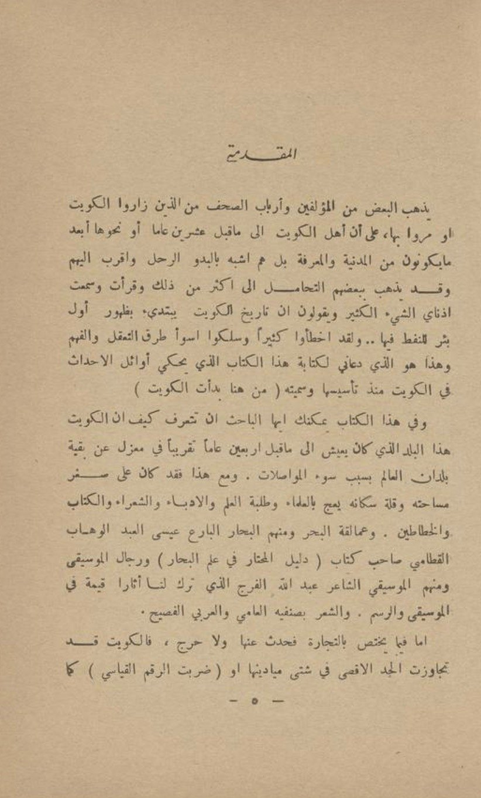

1960, published book · Book by Abdullah Khalid Al-Hatem, in two editions: the first edition (introduction page 5 and page 365) and a later edition (page 88)
Min Huna Bada’at Al-Kuwait: the first Kuwaiti woman to join the workforce
What it is
In the introduction (page 5) the author names among Kuwait’s giants of the sea «the skilled navigator Eissa Abdulwahab Al-Qatami, author of Dalil Al-Muhtar fi Ilm Al-Bihar». Under «The first Kuwaiti girl to enter the workforce» (page 365 in the first edition, page 88 in the later one) he names Sharifa Abdulwahab Al-Qatami, who began working at Kuwait Oil Company in 1960.
Why it matters
A published record of a first for Kuwaiti women, made by a woman of the family.
Page copies

Notes
Al-Qabas (15 March 2021) gives 1958 for the same first; the book gives 1960. Only the first pages are shown here. Family members who sign in can see all 5 pages.
Sources
Abdullah Khalid Al-Hatem, Min Huna Bada’at Al-Kuwait, first edition, pages 5 and 365; later edition, page 88
How this text was made: Photographed from the printed page.
Open in the interactive site